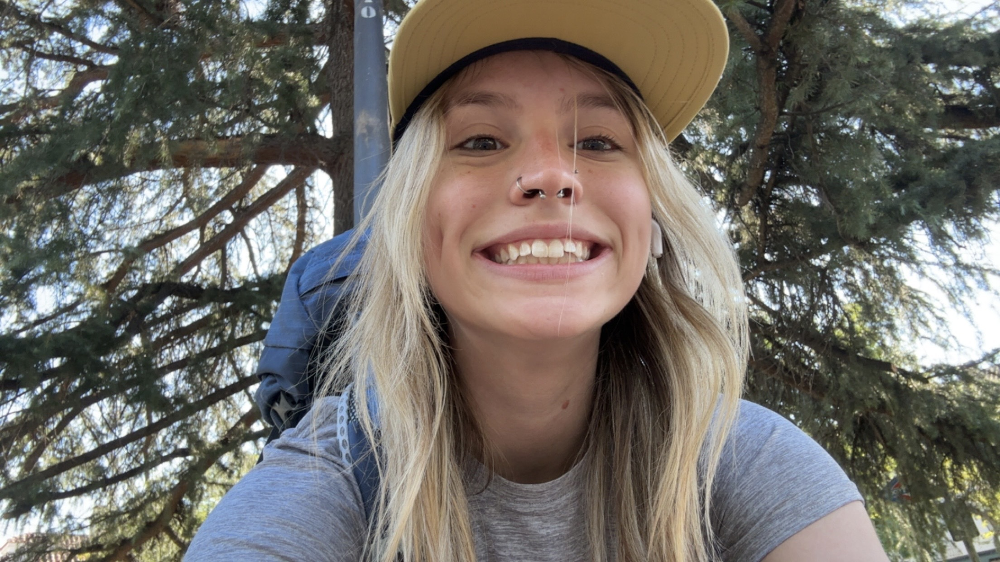
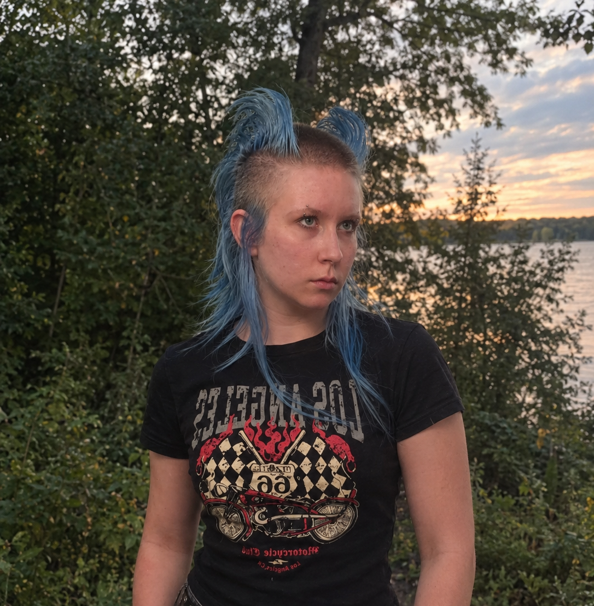

Group members
Principal Investigator
Kezhou (Melody) Lu
Assistant Professor
Education
- Georgia Institute of Technology, Ocean & Climate Dynamics, Ph.D., 2018-2023
- University of California, Berkeley, Environmental Engineering, M.S., 2017-2018
- Tongji University, Environmental Science, B.S., 2013-2017
Academic Appointments
- Florida State University, Assistant Professor, 2026-present
- University of California, Los Angeles, Postdoctoral Scientist, 2024-2026
- Spelman College, Lecturer, 2024
Graduate Students
More to come!
Undergraduate Researchers
Howard Spiegel
Undergraduate Researcher
I am a 4th year undergraduate meteorology student, who transferred from Tampa, currently working on my senior thesis. I am planning to continue for my masters degree at FSU, focusing on Atlantic Tropical Cyclones.
Current Research
ENSO's remote impact on Atlantic TCs

Ryan Durant
Undergraduate Researcher
I'm a third-year meteorology student with interests in tropical and mesoscale meteorology as well as climate modeling. In my free time I enjoy watching 250 mb wind loops and exploring the great outdoors. I also have a gray tabby cat named Maurice!
Current Research
ENSO predictability in reduced-order models

Veronica Kostka
Undergraduate Researcher
Hello, my name is Veronica! I am an FSU undergraduate student majoring in Meteorology and Applied Mathematics. I enjoy drawing and creating cosplays from scratch. In the future, I want to become a commercial pilot. Until then, I am excited to pursue tropical meteorology and further develop my research experience in the field!
Current Research
Tropical hydrological cycle bias